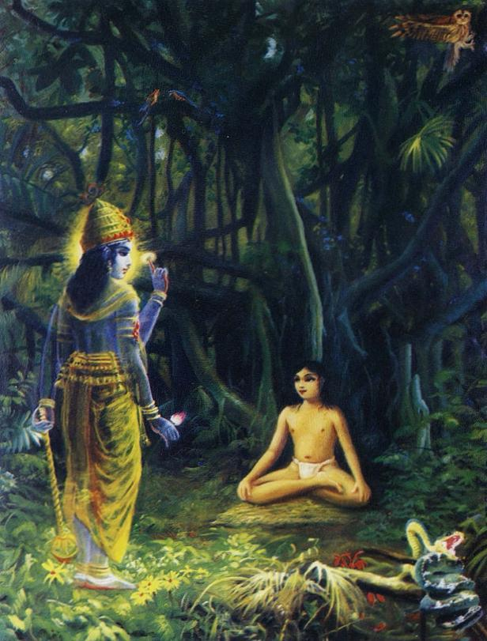

Chapter 3: Conversation Between Nārada and Vyāsadeva
SB 1.6.1 — Sūta said: O brāhmaṇas, thus hearing all about Śrī Nārada’s birth and activities, Vyāsadeva, the incarnation of God and son of Satyavatī, inquired as follows.
SB 1.6.2 — Śrī Vyāsadeva said: What did you [Nārada] do after the departure of the great sages who had instructed you in scientific transcendental knowledge before the beginning of your present birth?
SB 1.6.3 — O son of Brahmā, how did you pass your life after initiation, and how did you attain this body, having quit your old one in due course?
SB 1.6.4 — O great sage, time annihilates everything in due course, so how is it that this subject matter, which happened prior to this day of Brahmā, is still fresh in your memory, undisturbed by time?
SB 1.6.5 — Śrī Nārada said: The great sages, who had imparted scientific knowledge of transcendence to me, departed for other places, and I had to pass my life in this way.
SB 1.6.6 — I was the only son of my mother, who was not only a simple woman but a maidservant as well. Since I was her only offspring, she had no other alternative for protection: she bound me with the tie of affection.
SB 1.6.7 — She wanted to look after my maintenance properly, but because she was not independent, she was not able to do anything for me. The world is under the full control of the Supreme Lord; therefore everyone is like a wooden doll in the hands of a puppet master.
SB 1.6.8 — When I was a mere child of five years, I lived in a brāhmaṇa school. I was dependent on my mother’s affection and had no experience of different lands.
SB 1.6.9 — Once upon a time, my poor mother, when going out one night to milk a cow, was bitten on the leg by a serpent, influenced by supreme time.
SB 1.6.10 — I took this as the special mercy of the Lord, who always desires benediction for His devotees, and so thinking, I started for the north.
SB 1.6.11 — After my departure, I passed through many flourishing metropolises, towns, villages, animal farms, mines, agricultural lands, valleys, flower gardens, nursery gardens and natural forests.
SB 1.6.12 — I passed through hills and mountains full of reservoirs of various minerals like gold, silver and copper, and through tracts of land with reservoirs of water filled with beautiful lotus flowers, fit for the denizens of heaven, decorated with bewildered bees and singing birds.
SB 1.6.13 — I then passed alone through many forests of rushes, bamboo, reeds, sharp grass, weeds and caves, which were very difficult to go through alone. I visited deep, dark and dangerously fearful forests, which were the play yards of snakes, owls and jackals.
SB 1.6.14 — Thus traveling, I felt tired, both bodily and mentally, and I was both thirsty and hungry. So I took a bath in a river lake and also drank water. By contacting water, I got relief from my exhaustion.

SB 1.6.15 — After that, under the shadow of a banyan tree in an uninhabited forest I began to meditate upon the Supersoul situated within, using my intelligence, as I had learned from liberated souls.
SB 1.6.16 — As soon as I began to meditate upon the lotus feet of the Personality of Godhead with my mind transformed in transcendental love, tears rolled down my eyes, and without delay the Personality of Godhead, Śrī Kṛṣṇa, appeared on the lotus of my heart.
SB 1.6.17 — O Vyāsadeva, at that time, being exceedingly overpowered by feelings of happiness, every part of my body became separately enlivened. Being absorbed in an ocean of ecstasy, I could not see both myself and the Lord.
SB 1.6.18 — The transcendental form of the Lord, as it is, satisfies the mind’s desire and at once erases all mental incongruities. Upon losing that form, I suddenly got up, being perturbed, as is usual when one loses that which is desirable.
SB 1.6.19 — I desired to see again that transcendental form of the Lord, but despite my attempts to concentrate upon the heart with eagerness to view the form again, I could not see Him any more, and thus dissatisfied, I was very much aggrieved.
SB 1.6.20 — Seeing my attempts in that lonely place, the Personality of Godhead, who is transcendental to all mundane description, spoke to me with gravity and pleasing words, just to mitigate my grief.
SB 1.6.21 — O Nārada [the Lord spoke], I regret that during this lifetime you will not be able to see Me anymore. Those who are incomplete in service and who are not completely free from all material taints can hardly see Me.
SB 1.6.22 — O virtuous one, you have only once seen My person, and this is just to increase your desire for Me, because the more you hanker for Me, the more you will be freed from all material desires.
SB 1.6.23 — By service of the Absolute Truth, even for a few days, a devotee attains firm and fixed intelligence in Me. Consequently he goes on to become My associate in the transcendental world after giving up the present deplorable material worlds.
SB 1.6.24 — Intelligence engaged in My devotion cannot be thwarted at any time. Even at the time of creation, as well as at the time of annihilation, your remembrance will continue by My mercy.
SB 1.6.25 — Then that supreme authority, personified by sound and unseen by eyes, but most wonderful, stopped speaking. Feeling a sense of gratitude, I offered my obeisances unto Him, bowing my head.
SB 1.6.26 — Thus I began chanting the holy name and fame of the Lord by repeated recitation, ignoring all the formalities of the material world. Such chanting and remembering of the transcendental pastimes of the Lord are benedictory. So doing, I traveled all over the earth, fully satisfied, humble and unenvious.
SB 1.6.27 — And so, O Brāhmaṇa Vyāsadeva, in due course of time I, who was fully absorbed in thinking of Kṛṣṇa and who therefore had no attachments, being completely freed from all material taints, met with death, as lightning and illumination occur simultaneously.
SB 1.6.28 — Having been awarded a transcendental body befitting an associate of the Personality of Godhead, I quit the body made of five material elements, and thus all acquired fruitive results of work [karma] stopped.
SB 1.6.29 — At the end of the millennium, when the Personality of Godhead, Lord Nārāyaṇa, lay down within the water of devastation, Brahmā began to enter into Him along with all creative elements, and I also entered through His breathing.
SB 1.6.30 — After 4,300,000,000 solar years, when Brahmā awoke to create again by the will of the Lord, all the ṛṣis like Marīci, Aṅgirā, Atri and so on were created from the transcendental body of the Lord, and I also appeared along with them.
SB 1.6.31 — Since then, by the grace of the almighty Viṣṇu, I travel everywhere without restriction both in the transcendental world and in the three divisions of the material world. This is because I am fixed in unbroken devotional service of the Lord.
SB 1.6.32 — And thus I travel, constantly singing the transcendental message of the glories of the Lord, vibrating this instrument called a vīṇā, which is charged with transcendental sound and which was given to me by Lord Kṛṣṇa.
SB 1.6.33 — The Supreme Lord Śrī Kṛṣṇa, whose glories and activities are pleasing to hear, at once appears on the seat of my heart, as if called for, as soon as I begin to chant His holy activities.
SB 1.6.34 — It is personally experienced by me that those who are always full of cares and anxieties due to desiring contact of the senses with their objects can cross the ocean of nescience on a most suitable boat — the constant chanting of the transcendental activities of the Personality of Godhead.
SB 1.6.35 — It is true that by practicing restraint of the senses by the yoga system one can get relief from the disturbances of desire and lust, but this is not sufficient to give satisfaction to the soul, for this [satisfaction] is derived from devotional service to the Personality of Godhead.
SB 1.6.36 — O Vyāsadeva, you are freed from all sins. Thus I have explained my birth and activities for self-realization, as you asked. All this will be conducive for your personal satisfaction also.
SB 1.6.37 — Sūta Gosvāmī said: Thus addressing Vyāsadeva, Śrīla Nārada Muni took leave of him, and vibrating on his vīṇā instrument, he left to wander at his free will.
SB 1.6.38 — All glory and success to Śrīla Nārada Muni because he glorifies the activities of the Personality of Godhead, and so doing he himself takes pleasure and also enlivens all the distressed souls of the universe.